Using an electrical meter safely and efficiently is perhaps the most valuable skill an electronics technician can master, both for the sake of their own personal safety and for proficiency at their trade. It can be daunting at first to use a meter, knowing that you are connecting it to live circuits which may harbor life-threatening levels of voltage and current.
This concern is not unfounded, and it is always best to proceed cautiously when using meters. Carelessness more than any other factor is what causes experienced technicians to have electrical accidents.
The most common piece of electrical test equipment is a meter called the multimeter. Multimeters are so named because they have the ability to measure a multiple of variables: voltage, current, resistance, and often many others, some of which cannot be explained here due to their complexity.
In the hands of a trained technician, the multimeter is both an efficient work tool and a safety device. In the hands of someone ignorant and/or careless, however, the multimeter may become a source of danger when connected to a “live” circuit.
There are many different brands of multimeters, with multiple models made by each manufacturer sporting different sets of features. The multimeter shown here in the following illustrations is a “generic” design, not specific to any manufacturer, but general enough to teach the basic principles of use:
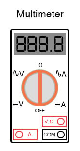
You will notice that the display of this meter is of the “digital” type: showing numerical values using four digits in a manner similar to a digital clock. The rotary selector switch (now set in the Off position) has five different measurement positions it can be set in: two “V” settings, two “A” settings, and one set in the middle with a funny-looking “horseshoe” symbol on it representing “resistance.”
The “horseshoe” symbol is the Greek letter “Omega” (Ω), which is the common symbol for the electrical unit of ohms.
Of the two “V” settings and two “A” settings, you will notice that each pair is divided into unique markers with either a pair of horizontal lines (one solid, one dashed) or a dashed line with a squiggly curve over it. The parallel lines represent “DC” while the squiggly curve represents “AC.” The “V” of course stands for “voltage” while the “A” stands for “amperage” (current).
The meter uses different techniques, internally, to measure DC than it uses to measure AC, and so it requires the user to select which type of voltage (V) or current (A) is to be measured. Although we haven’t discussed alternating current (AC) in any technical detail, this distinction in meter settings is an important one to bear in mind.
There are three different sockets on the multimeter face into which we can plug our test leads. Test leads are nothing more than specially-prepared wires used to connect the meter to the circuit under test.
The wires are coated in a color-coded (either black or red) flexible insulation to prevent the user’s hands from contacting the bare conductors, and the tips of the probes are sharp, stiff pieces of wire:
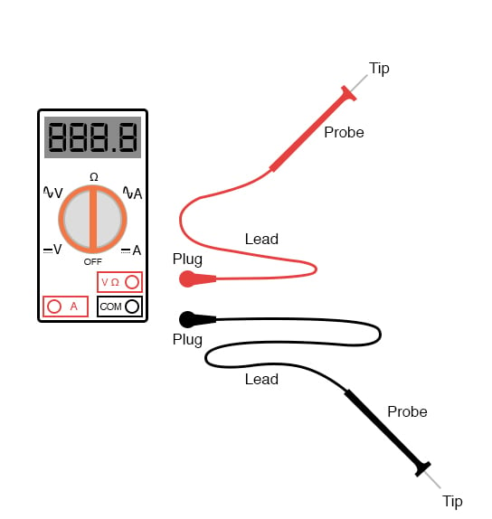
The black test lead always plugs into the black socket on the multimeter: the one marked “COM” for “common.” The red test leads plugs into either the red socket marked for voltage and resistance or the red socket marked for current, depending on which quantity you intend to measure with the multimeter.
To see how this works, let’s look at a couple of examples showing the meter in use. First, we’ll set up the meter to measure DC voltage from a battery:
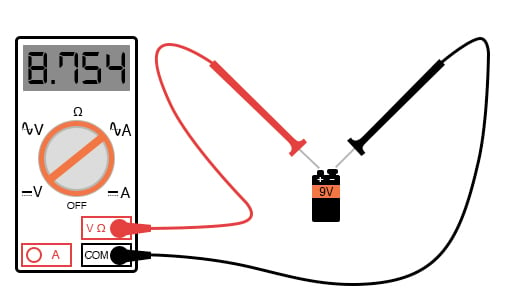
Note that the two test leads are plugged into the appropriate sockets on the meter for voltage, and the selector switch has been set for DC “V”. Now, we’ll take a look at an example of using the multimeter to measure AC voltage from a household electrical power receptacle (wall socket):
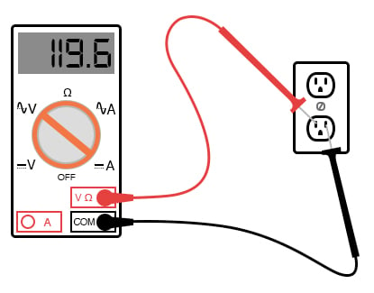
The only difference in the setup of the meter is the placement of the selector switch: it is now turned to AC “V”. Since we’re still measuring voltage, the test leads will remain plugged in the same sockets.
In both of these examples, it is imperative that you not let the probe tips come in contact with one another while they are both in contact with their respective points on the circuit. If this happens, a short-circuit will be formed, creating a spark and perhaps even a ball of flame if the voltage source is capable of supplying enough current! The following image illustrates the potential for hazard:
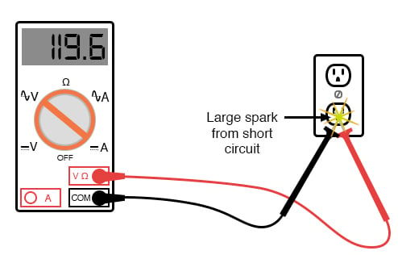
This is just one of the ways that a meter can become a source of the hazard if used improperly.
Voltage measurement is perhaps the most common function a multimeter is used for. It is certainly the primary measurement taken for safety purposes (part of the lock-out/tag-out procedure), and it should be well understood by the operator of the meter.
Being that voltage is always relative between two points, the meter must be firmly connected to two points in a circuit before it will provide a reliable measurement. That usually means both probes must be grasped by the user’s hands and held against the proper contact points of a voltage source or circuit while measuring.
Because a hand-to-hand shock current path is the most dangerous, holding the meter probes on two points in a high-voltage circuit in this manner is always a potential hazard. If the protective insulation on the probes is worn or cracked, it is possible for the user’s fingers to come into contact with the probe conductors during the time of test, causing a bad shock to occur. If it is possible to use only one hand to grasp the probes, that is a safer option.
Sometimes it is possible to “latch” one probe tip onto the circuit test point so that it can be let go of and the other probe set in place, using only one hand. Special probe tip accessories such as spring clips can be attached to help facilitate this.
Remember that meter test leads are part of the whole equipment package and that they should be treated with the same care and respect that the meter itself is. If you need a special accessory for your test leads, such as a spring clip or other special probe tip, consult the product catalog of the meter manufacturer or other test equipment manufacturer.
Do not try to be creative and make your own test probes, as you may end up placing yourself in danger the next time you use them on a live circuit.
Also, it must be remembered that digital multimeters usually do a good job of discriminating between AC and DC measurements, as they are set for one or the other when checking for voltage or current.
As we have seen earlier, both AC and DC voltages and currents can be deadly, so when using a multimeter as a safety check device you should always check for the presence of both AC and DC, even if you’re not expecting to find both! Also, when checking for the presence of hazardous voltage, you should be sure to check all pairs of points in question.
For example, suppose that you opened up an electrical wiring cabinet to find three large conductors supplying AC power to a load. The circuit breaker feeding these wires (supposedly) has been shut off, locked, and tagged. You double-checked the absence of power by pressing the Start button for the load. Nothing happened, so now you move on to the third phase of your safety check: the meter test for voltage.
First, you check your meter on a known source of voltage to see that it’s working properly. Any nearby power receptacle should provide a convenient source of AC voltage for a test. You do so and find that the meter indicates as it should. Next, you need to check for voltage among these three wires in the cabinet. But voltage is measured between two points, so where do you check?
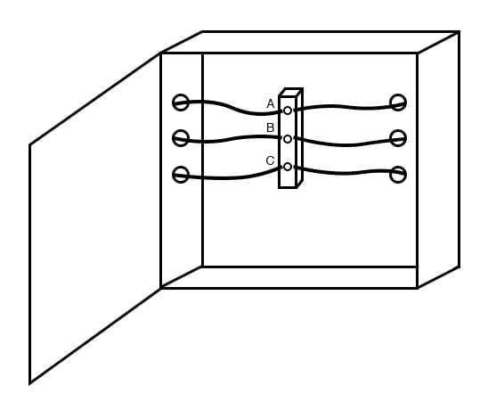
The answer is to check between all combinations of those three points. As you can see, the points are labeled “A”, “B”, and “C” in the illustration, so you would need to take your multimeter (set in the voltmeter mode) and check between points A & B, B & C, and A & C.
If you find voltage between any of those pairs, the circuit is not in a Zero Energy State. But wait! Remember that a multimeter will not register DC voltage when it’s in the AC voltage mode and vice versa, so you need to check those three pairs of points in each mode for a total of six voltage checks in order to be complete!
However, even with all that checking, we still haven’t covered all possibilities yet. Remember that hazardous voltage can appear between a single wire and ground (in this case, the metal frame of the cabinet would be a good ground reference point) in a power system.
So, to be perfectly safe, we not only have to check between A & B, B & C, and A & C (in both AC and DC modes), but we also have to check between A & ground, B & ground, and C & ground (in both AC and DC modes)! This makes for a grand total of twelve voltage checks for this seemingly simple scenario of only three wires. Then, of course, after we’ve completed all these checks, we need to take our multimeter and re-test it against a known source of voltage such as a power receptacle to ensure that it’s still in good working order.
Using a multimeter to check for resistance is a much simpler task. The test leads will be kept plugged in the same sockets as for the voltage checks, but the selector switch will need to be turned until it points to the “horseshoe” resistance symbol. Touching the probes across the device whose resistance is to be measured, the meter should properly display the resistance in ohms:
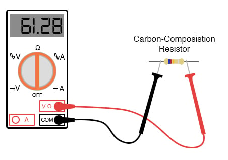
One very important thing to remember about measuring resistance is that it must only be done on de-energized components! When the meter is in “resistance” mode, it uses a small internal battery to generate a tiny current through the component to be measured.
By sensing how difficult it is to move this current through the component, the resistance of that component can be determined and displayed. If there is an additional source of voltage in the meter-lead-component-lead-meter loop to either aid or oppose the resistance-measuring current produced by the meter, faulty readings will result. In a worse-case situation, the meter may even be damaged by the external voltage.
The “resistance” mode of a multimeter is very useful in determining wire continuity as well as making precise measurements of resistance. When there is a good, solid connection between the probe tips (simulated by touching them together), the meter shows almost zero Ω. If the test leads had no resistance in them, it would read exactly zero:
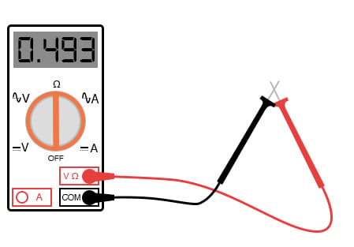
If the leads are not in contact with each other or touching opposite ends of a broken wire, the meter will indicate infinite resistance (usually by displaying dashed lines or the abbreviation “O.L.” which stands for “open loop”):
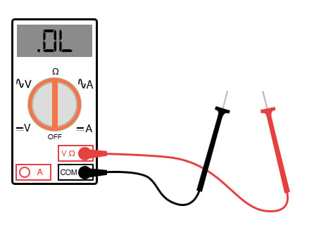
By far the most hazardous and complex application of the multimeter is in the measurement of current. The reason for this is quite simple: in order for the meter to measure current, the current to be measured must be forced to go through the meter.
This means that the meter must be made part of the current path of the circuit rather than just be connected off to the side somewhere as is the case when measuring voltage. In order to make the meter part of the current path of the circuit, the original circuit must be “broken” and the meter connected across the two points of the open break. To set the meter up for this, the selector switch must point to either AC or DC “A” and the red test lead must be plugged in the red socket marked “A”.
The following illustration shows a meter all ready to measure current and a circuit to be tested:
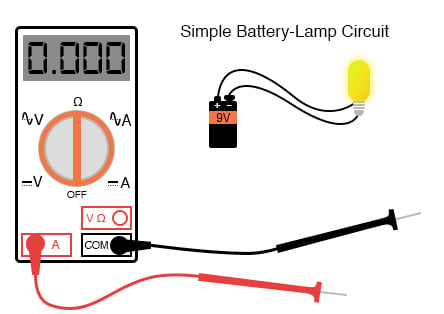
Now, the circuit is broken in preparation for the meter to be connected:
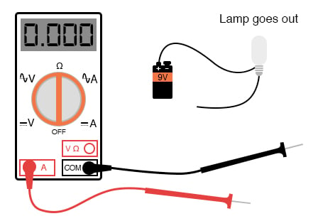
The next step is to insert the meter in-line with the circuit by connecting the two probe tips to the broken ends of the circuit, the black probe to the negative (-) terminal of the 9-volt battery and the red probe to the loose wire end leading to the lamp:
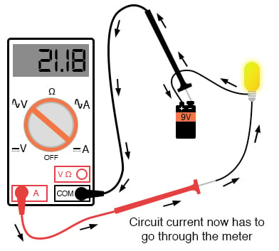
This example shows a very safe circuit to work with. 9 volts hardly constitutes a shock hazard, and so there is little to fear in breaking this circuit open (barehanded, no less!) and connecting the meter in-line with the flow of current. However, with higher power circuits, this could be a hazardous endeavor indeed.
Even if the circuit voltage was low, the normal current could be high enough that an injurious spark would result at the moment the last meter probe connection was established.
Another potential hazard of using a multimeter in its current-measuring (“ammeter”) mode is the failure to properly put it back into a voltage-measuring configuration before measuring the voltage with it. The reasons for this are specific to ammeter design and operation. When measuring circuit current by placing the meter directly in the path of the current, it is best to have the meter offer little or no resistance to current flow.
Otherwise, the additional resistance will alter the circuit’s operation. Thus, the multimeter is designed to have practically zero ohms of resistance between the test probe tips when the red probe has been plugged into the red “A” (current-measuring) socket. In the voltage-measuring mode (red lead plugged into the red “V” socket), there are many mega-ohms of resistance between the test probe tips, because voltmeters are designed to have close to infinite resistance (so that they don’t draw any appreciable current from the circuit under test).
When switching a multimeter from current- to voltage-measuring mode, it’s easy to spin the selector switch from the “A” to the “V” position and forget to correspondingly switch the position of the red test lead plug from “A” to “V”. The result—if the meter is then connected across a source of substantial voltage—will be a short-circuit through the meter!
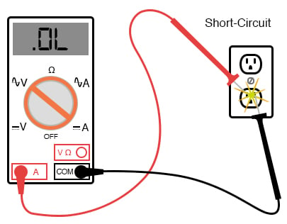
To help prevent this, most multimeters have a warning feature by which they beep if ever there’s a lead plugged in the “A” socket and the selector switch is set to “V”. As convenient as features like these are, though, they are still no substitute for clear thinking and caution when using a multimeter.
All good-quality multimeters contain fuses inside that are engineered to “blow” in the event of excessive current through them, such as in the case illustrated in the last image. Like all overcurrent protection devices, these fuses are primarily designed to protect the equipment (in this case, the meter itself) from excessive damage, and only secondarily to protect the user from harm.
A multimeter can be used to check its own current fuse by setting the selector switch to the resistance position and creating a connection between the two red sockets like this:
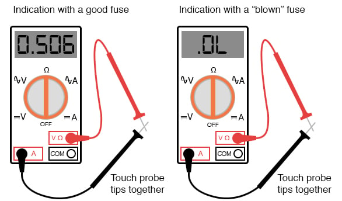
A good fuse will indicate very little resistance while a blown fuse will always show “O.L.” (or whatever indication that model of multimeter uses to indicate no continuity). The actual number of ohms displayed for a good fuse is of little consequence, so long as its an arbitrarily low figure.
So now that we’ve seen how to use a multimeter to measure voltage, resistance, and current, what more is there to know? Plenty! The value and capabilities of this versatile test instrument will become more evident as you gain skill and familiarity using it.
There is no substitute for regular practice with complex instruments such as these, so feel free to experiment on safe, battery-powered circuits.
REVIEW: